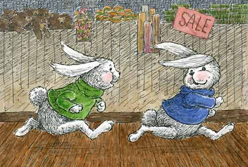

| Wolstencroft the Bear | Page 3 |
They all had very big ears and feet and long legs. All three were wearing woolen sweaters.
Rita Rabbit wore a pink sweater. Roger Rabbit a green one. And Ronnie wore blue.
Roger and Ronnie were twins, and Rita was their sister.
"My you are a handsome bear," Rita told Wolstencroft after the store had closed for the night. "I'm surprised that no one has bought you and taken you home."
"So am I," replied Wolstencroft and, although he tried very hard to stop it, a tear rolled down his furry cheek.
Ronnie and Roger had jumped down off the shelf and were playing tag up and down the aisles.

"Be careful and don't knock anything over," Rita called to them.
Rita looked closely at Wolstencroft from every angle. She peered into his face and circled around him, her nose twitching. He had noticed that bunnies' noses twitch a lot. Then she sat down and remained deep in thought for a very long time.
"Well," he asked her, unable to stand the suspense any longer. "What do you think is wrong with me? Why doesn't anyone want to buy me?"
"It must be your name," Rita answered.
"My name!" exclaimed Wolstencroft. "Why, what's wrong with my name?"
"Oh, there's nothing wrong with your name," Rita replied. "Wolstencroft is a wonderful name, but it's too long for some people to say. Not everyone can pronounce it properly."
Now Wolstencroft had always been able to say his name correctly. But then, it was his very own name and everyone can say his or her own name. At least he thought that they could. Not when they are very little, of course. He couldn't say his name when he was a tiny baby bear. But after he had started going to school he knew it very well.
"Wolstencroft," the teacher would call out. "Will you recite the alphabet for us today?"
And he would name all the letters from A to Z. All 26 of them. He was a very smart bear.
|
TURN THE PAGE | |
|||
| Go to page: 1 - 2 - 3 - 4 - 5 - 6 - 7 | |||||
| Back to Children's Storybooks Online | |||||
| Copyright ©2003 Karen Lewis. Illustrations copyright ©2003 Carol Moore. All rights reserved. 031911430 | |||||